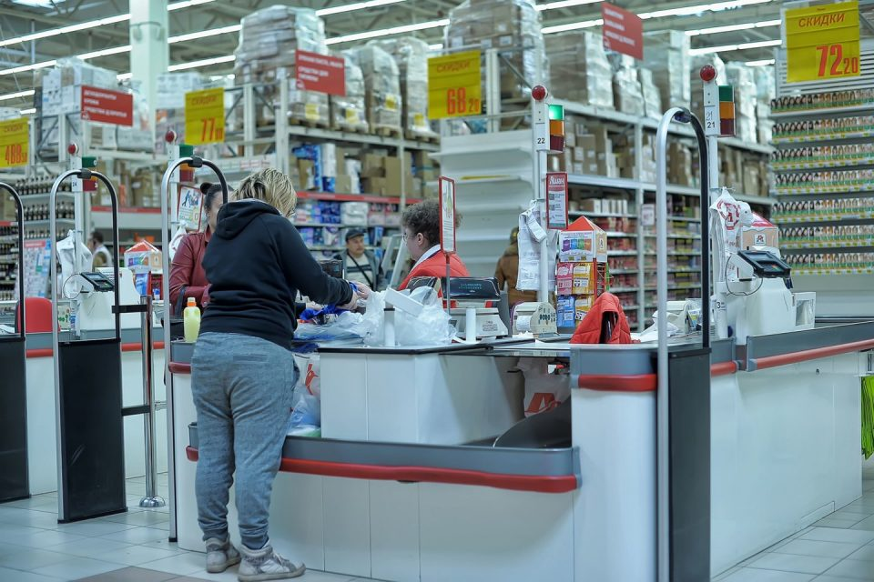

Mauris vitae nisl nec metus placerat perdiet est. Phasellus dapibus semper urna. Pellentesque ornare, orci in consectetuer hendrerit, volutpat.
Pellenteque ornare

Sausainiai be kepimo miltelių "Obuolių skarelės" pagal Beatą Atvyko, pamačiau, apiplėšė: drąsus parduotuvių apiplėšimas. olesya gluosniai. Mes visi mėgstame filmus apie nuotykius turinčius apiplėšimus, bet gyvenimas, kaip žinote, yra turtingesnis už vaizduotę ir išmeta sklypus blogiau nei filmuose. Mes nenorime romantizuoti nusikaltėlius, bet neįmanoma tylėti apie tokias istorijas.
Pamačiau-įamžinau - Page 3 of 6 - Ūkininko patarėjas Pamačiau pas kaimynę ant langų burbulinę plėvelę. Sužinojau kam ji reikalinga, o paskui ir pati užsidėjau tokią ant visų langų 13.10.2020 Daiva Comments Off on Pamačiau pas kaimynę ant langų burbulinę plėvelę.
Before. Kai aš tave pamačiau | Baltos lankos Rytų Londone, Dagenhame esančioje parduotuvės „Iceland“ automobilių aikštelėje tyčia suvažinėtas vyras. Nelaimė nutiko vėlyvą rugsėjo 13 d. vakarą, prieš vidurnaktį. Policija skelbia, kad vyras to paties automobilio buvo partrenkiamas penkis kartus, kol krito be sąmonės, rašo „Mirror“.
Rytų Londone tyčia suvažinėtas vyras | ANGLIJA.today Filmą vėl pamačiau prieš pat rašydamas šią apžvalgą ir, nors žinojau, kas bus, aš pasitraukiau į istoriją. Kitas keistas faktas yra tas, kad dėl bet kokios priežasties šis filmas galėjo užfiksuoti Nevą Campbellą ir Robiną Tunney savo amatų viršūnėje (atsiprašau už puną). Tunizės charizmatiškasis saldumas geriausiai ...
Andalūzija Makaliaus akimis – pamačiau, nufotografavau ir ... Niekaip negaliu prisiminti kur šią pyrago idėją pamačiau. Pamenu tik, kad tai buvo video formatas, o kadangi tokių žiūriu nemažai, nebeatkapstau kur ir kada. Idėja fantastiška, pyragui šaldytos tešlos visada turiu šaldiklyje, obuolių šiemet irgi nestingame, tad netgi jei paskambina draugė – saldumynų mėgėja ir praneša ...
Kūmutės virtuvė – Valgome tam, kad gyventi būtų skaniau ... Ne laiku ir ne vietoje. Taip sakoma apie įvairias negandas, kurios mus užklumpa pačiu netinkamiausiu ir netikėčiausiu laiku. Pačios rinkimų kampanijos įkarštyje nepasisekė ir man: nikstelėjau ...
Modesta Petrauskaitė. Ką aš pamačiau priimamajame. Kas ... PAMAČIAU WINTER FOREST BAR DAUGIAU Konstruok & Paklusk DAUGIAU Patenkink & Pražudyk DAUGIAU Michael DAUGIAU Kambarys Londonui DAUGIAU Pick Me Up DAUGIAU Žavintys House of Hackney DAUGIAU Stebuklingas Donna Wilson pasaulis DAUGIAU YAYOI KUSAMA // TATE MODERN DAUGIAU
Laukinės Žąsys – Valgome ne namie. Nuomonės ir apžvalgos Rondos mieste pirmą kartą gyvenime pamačiau, kaip atrodo bulių kovų arena – „Plaza de Toros“. 1785 metais pastatytoje arenoje įrengtas muziejus. Korida čia vyksta labai retai, daugiausiai porą kartų metuose, ypatingų švenčių metu. Dabar tai veikiau arena, skirta svetimšaliams iš arčiau susipažinti su Ispanijos kultūros ...